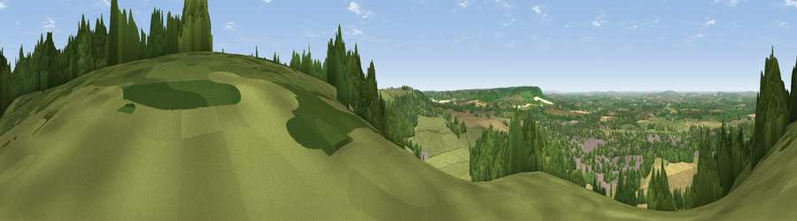

Brush Hill
#6875 in England · top 5% of its area beats it · near WhiteleafWhere it is
The exact computed spot (SP 82123 03468). Click the marker for map links.
The view, rendered

A 360° render of this exact spot computed from the terrain model, tree cover and land cover — summer colours, afternoon light, calibrated against photographs of famous viewpoints. Real trees, hedges and buildings will differ in detail.
The panorama
Grey silhouette: terrain skyline in each direction (720 bearings, Earth curvature and refraction included). Dashed green: skyline with trees (+15 m) and buildings (+8 m) as obstacles. Blue strip: how far the ground is visible on each bearing.
Where the view opens
Wedge length = distance to the farthest visible ground on that bearing (vegetation-aware). Rings at 10, 25 and 50 km.
What fills the view
34% grassland · 31% woodland · 28% cropland · 7% built-up
Angular shares of the visible panorama (visual magnitude), not map area. Landscape diversity 0.55 (0–1 Shannon).
Key numbers
More beautiful places nearby
The staircase of upgrades: each row has a higher view potential than everything closer. Driving times are estimates from straight-line distance, calibrated against real road routing — check an actual route before setting out.
| Place | Direction | Drive | Score |
|---|---|---|---|
| Viewpoint near Whiteleaf | N · 1 km | ~2 min | 70.1 |
| Beacon Hill | NNE · 3 km | ~7 min | 72.7 |
| Coombe Hill Monument | NE · 4 km | ~10 min | 75.5 |
| Viewpoint near Woolstone | WSW · 55 km | ~77 min | 76.7 |
| Martinsell viewpoint | WSW · 75 km | ~99 min | 77.3 |
| Broadway Hill | WNW · 78 km | ~102 min | 77.7 |
| Viewpoint near Buriton | S · 84 km | ~108 min | 80.0 |
| Beacon Hill | S · 85 km | ~109 min | 85.8 |
51.72393, -0.81246 · source: osm viewpoint · position refined by local search. Computed location — check access rights before visiting.